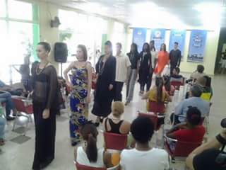

Yoan Manuel Pico: Quiero dar la bienvenida a los panelistas y me parece interesante comenzar haciendo referencia a Martí pues ya podemos decir con total seguridad que María Mantilla es su hija. En una mesa redonda transmitida recientemente se comentó que Carmen Miyares y José Martí eran amantes. Pues bien, a esa hija que tanto se preocupó por educar Martí le dice: “Mucha tienda, poca alma”. Nosotros por supuesto, interesados, yo diría, demasiado interesados en dar una visión de Martí contraria a la tienda, le otorgamos a eso una lectura tremendista, como si el Apóstol fuera contrario a todo lo que se refiere al buen vestir, pero no hay que olvidar el término “mucha”, es decir, demasiada tienda; lo que Martí nos está diciendo es que la persona sobrevestida, excesivamente vestida, barrocamente vestida no es elegante. En este sentido hay otra imagen en la misma carta que nos dice que “el jazmín debe ir en el cristal de agua” y eso precisamente es la elegancia para Martí: un equilibrio.
Por eso la elegancia se relaciona mucho con el arte. Hay una famosa anécdota de Sarah Bernhardt que cuenta cómo ella mandó a diseñarse una tela inspirada por la novela Salambó de Flaubert, las peripecias de cómo se logró confeccionar esa tela son increíbles y harían demasiado larga esta mesa, pero el episodio nos advierte sobre los vasos comunicantes entre moda y arte, entre elegancia y pensamiento. Como provocación les traigo el siguiente criterio de José Ortega y Gasset nada alejado de la realidad, lo constatamos todos los cubanos de entre cuarenta y cincuenta años cuando comentemos la osadía de ir una tienda a comprarnos una prenda de vestir: “Las modas actuales están pensadas para cuerpos jóvenes, y es tragicómica la situación de padres y madres que se ven obligados a imitar a sus hijos e hijas en la indumentaria. Los que ya estamos muy en la cima de la vida nos encontramos con la inaudita necesidad de tener que desandar un poco del camino hecho, como si lo hubiésemos errado y hacernos, de grado o no, más jóvenes de lo que somos. No se trata de fingir una mocedad que se ausenta de nuestra persona, sino que el modelo adoptado por la vida objetiva es el juvenil y nos fuerza a su adopción, como con el vestir acontece con todo lo demás: los usos, placeres, costumbres, modales, están cortados a la medida de los efebos”. Una provocación. Como ya dije todos la hemos vivido de una manera u otra, porque nuestras tiendas también están pensadas para los jóvenes. Estoy seguro que los invitados se van a referir a otras problemáticas como el diseño de estas opciones que nuestras tiendas les ofrecen a los jóvenes y por eso les doy la palabra de manera inmediata.
Ricardo Leyva: Yoan dijo que él iba a la tienda a comprar. En este momento la tendencia es que la tienda te compre a ti, o sea, que a partir de tu visita hagas uso permanente de esa institución y te quedes con ese lugar, ya sea un restaurante o cualquier otra institución dedicada a prestar servicio. El mercado trata de funcionar así y yo intento incorporarlo. Viene la persona, ve mis ofertas y se convierte en un cliente; el cliente, además de sentirse cómodo con tus servicios, tiene que confiar en ti y en eso te apoyas para sugerirle cambios en su manera de vestir y de usar la ropa, repito, siempre en función de él, nunca en función tuya.
En mi caso particular trato de combinar todas las tendencias, no me dejo guiar por patrones establecidos ni por las modas del momento, cosa muy difícil porque corres el riesgo de un fracaso total. Porque las modas internacionales se hacen por temporadas, hasta el teléfono que estamos usando y lo que consumimos está en moda también y se pone viejo, eso es una cosa realmente fatua. Yo pienso que lo importante es sentirse bien con lo que llevas puesto y asignarle su verdadero valor. Hace un rato reflexionábamos que el ser humano acumula casa, carro, cuentas en el banco y lo único que nos llevamos es la ropa, por tanto cómo vestimos es significativo y a veces en ese momento particular en el que tienes que ir a una graduación o a una fiesta o a algún lugar donde tú quieres sobresalir no tienes con qué. Los chinos tienen un refrán —a Yoan le va a gustar— que dice: “vístete para el trabajo que vas a conseguir, no para el que tienes hoy”. Los chinos son unas personas muy sabias y aplican eso, nosotros vamos al trabajo como quiera y entonces allí es donde está el gran error. Es verdad que existen personas que intentamos combatir eso, pero el monstruo es muy grande y es bastante difícil.
Beatriz Ochoa: En la proyección que se tiene para promover y educar el gusto estético de la población o de los diferentes segmentos del mercado a los que estamos dirigidos, cuesta mucho trabajo unir el palito con la chambelona, y me disculpan la expresión tan manida. Hablo de las funciones que nos tocan como promotores y como formadores de un gusto estético, de una identidad, de una solución de necesidades perentorias como es el vestir, vestir adecuadamente para cada ocasión, algo que se está perdiendo. Tú vas a un teatro y te encuentras a cualquier muchacho con un pitusa ripia'o, una de las prendas que más se utilizan ahora, pero que para un teatro no es lo más adecuado. Esto se ha perdido, las muchachas van en sandalia, ¿cuándo en la época de nosotros se iba a un lugar como ese en esas condiciones?, o sea, la diferenciación de los distintos modos y acciones para el vestir se ha perdido.
¿Dónde se origina ese problema? En la familia, esos valores se inculcan en ese ámbito. El fenómeno va más allá de la proyección social y alcanza a la educación que recibimos dentro de las casas. Por ejemplo, las niñas en este minuto están siendo vestidas como mujeres, yo misma he visto niñas en la calle con un tacón inmenso. Esa niña mete el pie en un hueco de los tantos que tienen nuestras calles y quizás adquiera un problema ortopédico de por vida, es increíble los riesgos que corremos por llevar a los niños a una moda que no les pertenece y que lejos de embellecerlos, los afea. Para nosotros la elegancia está en la sencillez: tú no necesitas tener muchas cosas encima, sino sentirte a gusto con lo que te pones.
La proyección del Fondo de Bienes Culturales debe estar en el rescate del trabajo con las manualidades. Por ejemplo, ¿cuántas de las jóvenes que están aquí saben tejer? Eso se está perdiendo, como pasa también con el trabajo con los accesorios naturales, crear tu propia impronta. El uso de un tipo de textil más acorde con nuestro clima, aquí muchos nos estamos asando, porque lo que traemos puesto es poliéster. No los estoy criticando porque eso depende del poder adquisitivo, de la oferta y la demanda que existe y que el Estado, aunque duela reconocerlo, no puede asumir ese tipo de gastos, ni nosotros como empresa lo podemos asumir, porque no existe el algodón, no existe la bambula, nos existe el hilo. Por eso todo está en la impronta que ponga cada cual, en sentirse bien con uno mismo y tratar de buscar las soluciones que más se adecuen a su perfil. Miren al muchacho, qué bien se ve con su pitusa ripia'o, su pullover y su moño, pero tiene edad para eso, esa es su imagen y él la disfruta porque se le ve en la cara que disfruta su imagen. Eso es lo que andamos buscando, que cada cual se sienta bien con lo que lo hace sentir bien, pero hay que tener cuidado en cómo nos proyectamos socialmente y eso es una de las funciones en las que nosotros trabajamos.
Pero eso nos crea conflictos muy grandes, porque a veces las propuestas que tenemos para los jóvenes no gustan, porque no están a la moda y no se imaginan el trabajo que cuesta confeccionar esas propuestas y llevarlas a una pasarela. Quisiera escuchar ideas porque este es un tema muy álgido, muy maltratado y muy mal llevado también. Tenemos a Ricardo Leyva aquí, un diseñador con más de veinticinco años de trabajo, a Rebeca Herrera que trabaja las manualidades de manera exquisita, sin embargo cuesta mucho trabajo que un joven utilice y emplee estas propuestas. Ellos han tenido que atemperarse y buscar su segmento de mercado, pero la mayoría de las personas desconoce que en el Fondo de Bienes Culturales pueden encontrar opciones de otro tipo, las que en realidad responden a determinados gustos. Pienso además que él pudiera abundar un poquito más en todo el trabajo que ha pasado durante veinticinco años para mantenerse en la actualidad y en las pasarelas y atemperar las distintas tendencias a nuestro clima, a nuestras opciones.
Ricardo Leyva: Yo no soy muy hablador que digamos, lo mío es trabajar, pero quiero referirme a un tema también muy importante: a veces las personas no saben qué hacer con una tela. Yo compro mucha tela y me maravilla ver cómo la gente toca y toca las telas sin tener la menor idea de para qué le pueden servir, y ni soñar con que sean capaces de calcular qué cantidad necesitan para hacer una pieza. Eso es una cultura que se perdió.
El otro tema es el que mencionaba Beatriz del uso de textiles acordes a nuestro clima. Ahora hay mucho hilo, pero la gente no lo compra porque no sabe con quién se va a mandar a hacer el modelo que desea y, segundo, no sabe cuánto le va a cobrar esa persona.
Beatriz Ochoa: Todo redunda en pérdida de los oficios. Las artesanas tienen una edad muy avanzada, pero no se promueve la trasmisión de ese conocimiento. ¿Cuántos de ustedes no saben que con el auge del cuentapropismo se han abierto algunos atelieres y que hay personas muy versadas que están haciendo un excelente trabajo, entre ellos artesanos pertenecientes al Fondo (de Bienes Culturales)? Sin embargo, no cubren la demanda poblacional, pues las personas prefieren comprarse un pullover, comprarse un pantalón hecho en tienda que ir a una costurera porque es que en realidad se está perdiendo el oficio. ¿Cómo rescatamos eso? ¿Qué estamos haciendo? Existe la Asociación Nacional de Artesanos y Artistas, la ACAA, que está implementando muchos cursos, pero es insuficiente por la demanda.

La población en Camagüey está envejeciendo a pasos agigantados y me pregunto dónde está la proyección para la ropa que necesita el adulto mayor. No existe, como tampoco existe para las mujeres obesas. Hay un proyecto en la Habana muy famoso, todas son obesas y ellas hacen pasarela, ellas proponen su propio diseño y ellas mismas son las modelos y es una iniciativa muy buena, pero dónde está la ropa de una persona que tiene determinado peso, dónde está el pantalón que no sea pelviano.
¿Dónde está la identidad del textil cubano? ¿Solo en la guayabera?, ¿solo en la bata cubana? Se han hecho algunas variantes de esas prendas. Le pedí a Leyva que trajera una muestra de eso para que se viera, que ya no es la típica guayabera con sus cuatro bolsillos sino otra interpretación en la que Rebeca también es muy ducha. Es necesario un enfoque más serio acerca de soluciones de primera necesidad porque el vestir es una acción de primera necesidad. Es muy difícil para los padres y las madres cubanas mantener a los niños con un vestuario adecuado, son muy caros y el poder adquisitivo es algo que está deprimido. Se necesita dinero para eso y en las casas hay otras prioridades.
Rebeca Herrera: He tenido el privilegio de vestir a varios muchachos que se van a graduar de preuniversitario o de alguna carrera universitaria. Ellos han ido a mi casa para hacerse un juego de pantalón y camisa de hilo, y se han ido muy contentos, aun cuando saben que no están vestidos de hilo, sino de lienzo porque no los estamos engañando, es lienzo, pero tratado de una manera que cuando se lo ponen creen que andan vestidos de hilo. O sea que ya parece ser que hay un porcentaje significativo de esa población joven que entiende que vistiendo de esa manera se ven más elegantes. Quizás entonces el problema no sea de mal gusto, sino de ofertas.
Yoan Pico: Se han tocado temas interesantes. Me interesa mucho el de la capacidad económica del cubano para adquirir ropa. “La moda nos constituye”, esa famosa frase de Barthes en Cuba pierde vigencia. Por la manera de vestir de una persona no puedes saber cómo es porque ella no puede elegir color, no puede elegir diseño, elementos que en cualquier país del mundo, hasta en Haití, te darían una primera información. Tienes que esperar a interactuar con el otro porque esa primera impresión puede ser falsa. Sería oportuno reconocer que vivimos en un país que durante mucho tiempo despreció la moda (no sé si Leyva sintió alguna vez ese desprecio), a veces incluso ejerciendo un poder ideológico contra ella y hoy la desprecia también desde el punto de vista económico: no tenemos la opción económica por tanto nos vemos imposibilitados de adquirir determinadas cosas. Recuerdo un poema de Roberto Fernández Retamar: «Con las mismas manos de acariciarte estoy construyendo una escuela». Allí el sujeto lirico escogido por Retamar dice: «Llegué casi al amanecer, con las que pensé que serían ropas de trabajo, / Pero los hombres y los muchachos que en sus harapos esperaban / Todavía me dijeron señor». Es decir, en los años sesenta la ropa era peligrosa, y la ropa cara o elegante, más peligrosa todavía, porque indicaba un estatus que la persona, si lo tenía, quería disimular.
Y volviendo a la literatura, recuerdo un poema de Osvaldo Sánchez que está en el libro Matar al último venado y es de los ochenta. Allí aparece una mujer a quien le gusta el perfume Christian Dior y vino llena de adornitos celestes, perfume Christian Dior, adornitos celestes, esta mujer se ve en qué onda está (recordar el modelo de mujer de los ochenta) y el poema termina: “cómo me gusta esta mujer tan suavemente estúpida”. Entonces hemos despreciado ciertas expresiones de la moda, las hemos penalizado. Todo al que la mandaban alguna ropita “de afuera” se vio en la situación de tener que picar la etiqueta Made in USA. No sé Leyva si tienes alguna anécdota puntual, sobre todo de esta ciudad, pues en los paneles de La Liga nos gusta ser muy críticos con Camagüey. Así que te doy pie para que hagas eso, que no estaría mal pues la ciudad se merece otro poema que no es precisamente “Elegía camagüeyana” (risas).
Ricardo Leyva: Los cubanos hemos sido muy carismáticos en nuestra interacción con la moda, téngase en cuenta que nosotros inventamos los abrigos aquellos y les pusimos «24 por segundo», a la «dupé» le pusimos «metedeo» y a un short, «Haila», «Donatella» a unas blusas y a unos vestidos le pusimos las «elenitas»; las «Sue Ellen» eran unas lycras, llamadas así por el personaje que las usaba en una novela. En fin, por esa parte hemos sido extremadamente creativos y rebeldes.